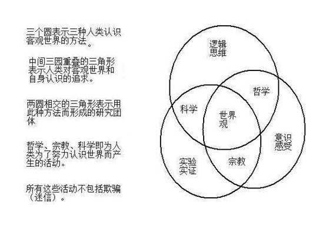

知识、真理先验地独立实存于人和历史之外，人生的意义就是追求这些真理，并服从它们，这一点西方文明自始至今都未变。但在知识、真理的具体起源上，以及获取它们的手段上，历经了神学、哲学、科学三大形态，三大阶段。祭祀、信仰、逻辑、实验都是获取真理，实现与真理（准神）合一的手段。
科学：建立在实践基础上，经过实践检验和严密逻辑论证的系统化和公式化了的公认的普遍真理或普遍定理知识。
哲学：研究整个世界一切事物、现象的共同本质和普遍的规律，如世界的本原、物质和意识的关系、世界的基本状态等；
神学：关于基督教信仰观的诸多理论；
科学和哲学的交叉部分：二都都同样诉诸于人类的理性，但哲学更重要的是思考而不是答案，科学则是经过论证的真理。
哲学和神学的交叉部分：都包含人类对于那些迄今仍为科学知识所不能肯定事物的思考，二者关注的往往重叠，甚至答案也往往交织。
一、科学和哲学
科学和哲学之间的关系：物理、数学、化学，生物学等这些科学类的可研究的东西与哲学的关系是什么？
简而言之，作为学科，科学和哲学都是具有系统性的（宗教理论也有系统性），而科学中的每一个具体学科研究的是经验的问题（概括性的），哲学研究的是先天的问题（大部分是概括性的）。请注意，后半句话不是特别准确，因为数学研究的也是先天的问题（并且也有不少概括性的问题），但是数学和问题和哲学问题一般来说还是比较好区分的，所以在此不作讨论。
二、宗教和哲学
虽然我们看到宗教就会联想到宗教学，并且它的确是一个哲学的分支。但是，就像动物学是生物学的子学科，动物却不是学科而是一种存在（形式？）那样，宗教也不是一门学科（即便宗教也具有一定的系统性），宗教学才是一门学科，但是哲学和科学却都是一门学科或者多门学科的统称，这便是最大的区别。宗教本身的学术性仅仅体现在神学领域，但很不幸的是，大部分宗教人士不怎么 care 神学。当然，在藏传佛教里面还保持着很好的论辩佛学话题的传统。但是对于大部分的普通佛教徒来说，佛学是不太重要的东西，就像对于大部分基督教徒来说，神学本身也不是特别重要那样。
为了展开对宗教的讨论，不妨先把宗教肢解一下。一种宗教有至少两个主要部分，一个是它的宗教理论，一个是它的宗教仪式。我不确定是否还有别的部分，但是这二者缺一不可。一般人（教徒）注重的是宗教中的仪式部分，以及理论中的伦理规范部分，而很少真的去研究它的理论（比如说佛教中的佛学和禅宗以及基督教中的神学），就像是大多数人有科学常识（其实说他们有科学常识都不太准确，他们只是知道应该怎么做罢了），而无科学素养那样。而如果我们要讨论它和哲学还有科学的关系，重点就应该放在理论部分。
一个宗教理论无疑有两部分，对于经验（后天）问题的论断以及对于先天问题的论断。其中前者和科学相关而后者和哲学相关（或者直接说就是哲学问题）。
出于专业原因，我想先拿宗教中的先天理论和哲学的关系开刀，因为这个问题讨论起来也比较简单。事实上，宗教中的神学部分由于种种原因，一直都是哲学领域中很重要的话题，比如说上帝是否存在，如果存在，如何解释恶的存在，等等等等。就连康德这样的大哲学家，为了解释道德问题，都不得不求助于上帝。所以宗教中的很多概念，尤其是天堂地狱（或者轮回）和上帝的概念，在哲学中有着十分重要的地位，即便现在不是那么的重要，它们在哲学史上也有着不可小觑的作用，毕竟在整个中世纪期间，哲学就是宗教的婢女。而在中国也差不过，如果将中国视作是一个政教合一的国家的话，那么儒教的思想毫无疑问也是一直服务于统治者的。（当然，儒教不是宗教。）
总而言之，宗教中那一部分牵扯到本体论、道德和价值判断的理论，本身就是哲学的一部分。比如说安瑟伦的本体论论证，及其之后的若干个加强版，甚至包括哥德尔也做过上帝存在的本体论论证。虽然康德从一开始就反对本体论论证，但是毫无疑问这个东西为生活添加了不少乐趣啊。
但是，就此认为这两者是相同的显然是不公道的，宗教和哲学最大的区别在于，宗教强调信 （believing），而哲学强调澄清（clarification）和证成（justification）。当然，不可否认很多神学家，比如说奥古斯丁、安瑟伦、阿奎那同时都是杰出的哲学家，但是大部分神学家走得似乎都离哲学远了一点，就像不是所有研究经验问题的都是科学那样，不是所有研究先验问题的都是哲学。神学和哲学的区别，大概有点像是中医和化学的区别，神学预设了一些本体的东西，并且和现在所谓的正统不太契合。也就是说，神学和哲学研究相似或者相同的问题，但是采用了不同的手段。
三、宗教和科学
然后是宗教和科学的关系。宗教和科学的分歧主要在经验问题上。所谓经验问题，是指那些可以通过经验或者是观察来解决的问题，比如说物种的起源，基督教就给出了一个和现代的进化生物学不相同的理论，再比如说地球的年龄，宗教和地球给出的答案也是不同的。对比宗教和科学，可以发现宗教一开始也是试图对世界上的各种现象做出解释。
但是，要系统地给出一个科学和宗教的划分却是极为困难的，因为科学本身的标准就千差万别。最极端的例子就是 methodological naturalism，它要求科学数据和科学理论都不应该将超自然力纳入考察范围内。而这种东西观点从方法论的角度自然地将科学和宗教对立了起来，因为无论是西方的创世还是佛教的轮回，都在某种意义上是对的超自然现象（超自然力、神、天使、恶魔）的调用。这种观点和可以被视作是一种基本的自然无神论的观点。而在这种观点下，科学和宗教是具有截然不同的性质的东西，并且同时科学也和任何一种原始迷信划清了界限。当然，这些讨论都仅限于经验的领域，毕竟科学本身是不涉及哲学判断的。
其实宗教最大的问题不在于其中关于经验世界的理论大多数是错的或者是不被认可的，而恰恰正是在于它借助了超自然力。如果你看过那篇《伪圣经 · 创世纪》（[1]）的话，你就会明白为什么我会这样说，显然，它不是科学理论，但是，它也不是错的，说它是宗教理论肯定也有不少基督教徒要吐槽我，大多数会认为这只是一种拿来搞笑的东西罢了。但是即便如此，我们还是有必要思考一下它是什么。从某种意义上来说，认为这是一种基督教理论的变种也是未尝不可的，即便不是基督教理论的变种，我们也可以将其视作一种类似于基督教的宗教理论。但是对比起科学，它同样具有系统性，可证伪性，是通过经验观察、推断和实验得到的。但是它不是科学。为什么它不是科学？因为它借助了上帝的概念。或者说，它借助了超自然力。【但是在之后的讨论中，你会发现其实这并不是一个好的理由，大爆炸这个事件本身，或者说宇宙起源这个事件，如果不借助超自然力是不可能解决的。因为我们总会问两个问题：如果这不是最初，那么它之前是什么？以及，如果这是最初，那么是什么使得它成为最初？】
并不是说宗教就和科学完全没有共同点。宗教和科学最大的共同点就是，科学也是基于信，这个则要从休谟问题说起。所谓休谟问题，最简单的理解就是归纳推理不保真。所以我们归纳出来的科学规律全部都是不必然为真的，即便各种定律在过去都成立，我们也不能保证它在未来也成立，这便是归纳推理最大的问题。也称为了休谟不可知论的基石。所以，我们并不知道光速是恒定的，我们只是相信光速是恒定的；我们不知道封闭体系内必然熵增，我们只是相信如此；我们也不知道生物到底是神创的还是进化来的，我们同样只是相信如此。除了归纳推理不保真，休谟还指出了另一点：因果是没有办法从本体意义上得到保证的，所以我们永远都没有办法断言两件事情之间是有因果关系，还是仅仅是每次都恰好如此。比如说我们会说运动的物体碰撞一个静止的物体是静止的物体从静止到运动的原因，但是我们不能确定这其中是否真的有这样的一个原因，还是仅仅是每次你（我们）观察的时候都是如此。因果意味着必然，但是我们从经验归纳中或者从别的什么中是得不到必然的。更重要的是，即便两个事件总是同时先后地发生，也不能说明这两个事件之间有必然的联系，一个比较简单（但不是太准确）的例子是，每次都先有闪电后有雷声，但是前者不是后者的原因。
但是，科学的信是有实践理性上的依据的，而宗教的信往往是基于认知偏误。以宗教中的超自然力为例，大多数传教者都只会宣传某某信了我们这个，获得了什么什么，或者什么病好了，而不会同时作出统计学上的比较分析。但是宗教信徒肯定就不会满意了，因为说到底科学的统计方法还是在科学主导了话语权之后得出的东西，我们说依赖于科学的统计方法是好的，而宗教没有依赖这个，是不好的，顿时就会有一种循环论证的气息扑面而来。
这肯定不是说宗教和科学是相同的，毕竟科学信的只是方法论，而宗教信的，是内容本身。「波普尔为什么说“人类所掌握的一切知识都不过是推测和假想”？」中最末提到的实用主义，可以看作是科学方法论的一个标准，排开理论物理学这种研究世界本质的学科不谈，大多数科学都有着很强的应用目的，因此，实践上的有效性也就称为了一个非常重要的标准。至于宗教中的预测，我可以这样说：虽然 A 宗教给出了一个这样的理论，但是我也可以假想一种 B 宗教理论，给出来的预测是完全相反的。而在不考虑科学方法的情况下，A 宗教和 B 宗教给出的预测是同等无价值的。因此我相信它和相信它的反面，在期望上是没有区别的，因此，宗教理论本身是无源的。
然而，很多教徒会对于宗教信仰的无源性做出反驳。事实上也是这样，宗教条例是有源的，比如说其中关于伦理学的规定，就有着实践上的理由，一个允许无故杀人的社会和一个不允许这样做的社会在稳定性上就有区别。同理，穆斯林不吃猪肉（或者说，相信「猪肉有害」这个事实判断）也很有可能有实践上的理由（穆斯林为什么不吃猪肉？），甚至我们可以认为这种理由已经强到了一个进化论的层面上：不这样做的民族在和外族抗争的过程中被干掉了。然而我们必须注意，当一些基本的条例被写进宗教经典中的时候，我们得出这个条例的方式依赖的就是一种前科学的方式。然而宗教最后却抛弃了这种方式，变为了对于教条本身的恪守。大概这就是两者在处理经验问题上的区别了。
至于超自然力，我想只能这样说了：科学几乎不使用超自然力，除非遇到了无法解决的问题。但是宗教呢？其实我记得也有神学家说过类似的话：不要一遇到问题就将解决方法诉诸上帝，上帝不是这样用的。但是毫无疑问，宗教里面有很多用到了超自然力的地方，比如说末日审判、天堂地狱等等。这些部分虽然不是直接影响人类的经验知识，但却影响了人类的伦理行为，甚至有这样一种观点：就算宗教本身是错的，宗教也是好的，因为受到神的约束的社会比起不受约束的社会更为稳定，因此，采用宗教作为统治纲领也有着实践上的适当理由。并且，过于发达的科学和魔法无异，除了顶端的研究人员，就算是生产者，也未必能够理解自己实际上在做什么。
不得不承认，在现代社会中，人们接受科学知识，仅仅是因为科学家们说它是对的，我们很少能有自己去实验验证的能力和机会，就算有，繁忙的工作也会让我们无暇顾及这些方面。相对地，这种专家构成的权威状况，就和当初的大主教们主导宗教话语权类似，虽然科学家本身的知识是依赖于一整套体系得出的，但是对于普通人来说，信科学和信宗教，或许其实没有太大的区别：既然是权威说的，那我就姑且信了吧。这也正是为什么伪科学的东西能够在某些情况下忽然大行其道的原因。对于二手知识，人们的认知方式是很难有系统性的提升途径的。就算科学内部构建了专门的评议体系，一个普通的个人却没有这样的能力。一方面自然是文献阅读能力了，其次则是数据库的接入权限问题。再考虑到实际上每个人的时间经历有限，如果有人乐意，完全可以花足够多的钱操纵媒体，让人相信（至少相信一段时间）相对论或者量子力学中有着及其严重的问题，或者让人相信歌德巴赫猜想已经证明出来了，或者，费马大定理的证明实际上是错的。至于辟谣，大概就会像现在的辐射有害论一样，这么多年过去了，还是有人相信这个。我想吐槽的是什么呢？就算科学再发展，人们和过去的认知模式依旧有着非同一般的相似点，尤其是在接受无关专业的二手资讯的时候。而这一点是科学本身救不了我们的，这也是为什么我说人们在信科学的原因。
[1]《伪圣经 · 创世纪》链接： 诺亚的烦恼（一）
1:1 起初，神创造天地。
1:2 奇点是空虚混沌，一切物理定律都还不适用。
1:3 神说，要有光，就有了光。他看光是好的，就把光速设定为299,792,458m/s，并让之永远不变，不因参照系的改变而改变。
1:4 神称波长范围在0.77～0.39微米之间的光为“可见”，称这个区间以外的光为“不可见”。
1:5 有可见的，有不可见的，有光明，有黑暗，这是头一日。
1:6 神说，水之间要有上下，就造出空气来，将水分开了。
1:7 他把空气设定为21%是氧，78%是氮，还有若干是二氧化碳以及其他。神称50000米高度以下的对流层和平流层为天。这是第二日。
1:8 神说：天下的水要聚集在一处，使旱地露出来。他将旱地的海岸线切割成可以互相弥补的形状，又让上面的地质特征相似，以便让人们认为大陆是漂移过的。
1:9他在水里面加氯化钠、氯化钾、氯化钙以及很多其他化合物，神称这种加过杂质的水为海。神看着是好的。
1:10他又造出不同质量的原油，将天然气和原油混合在一起，又造出硬化变黑的石炭纪森林。他看这些资源是好的，就埋在地下和水下，又使之丰富。他还造出锰结核来放置于水底。这是第三日。
1:11 神又造出古代动物的化石。他又造出几种将来会有的智慧生物祖先的原型，和他们应该会用的燧石埋在一起，以便让他们以为进化论是正确的。神看这是好的。
1:12 神就将它们埋在地下，但埋得不太深。
1:13 神说，地要发生青草，和结种子的菜蔬，并结果子的树木，各从其类，果子都包着核，除去香蕉。事就这样成了。神看这好像太简单了，就将其性能退化，并留下人类选择改良的余地，才看这是好的。这是第四日。
1:14 神说，天上要有光体，可以分昼夜，做记号，定节令，日子，年岁，提供光合作用所需的太阳能。
1:15 他便造出各种基本粒子，并让他们能够彼此影响。神认为这过于简单，世人必不存敬畏，于是又把它分成强相互作用力、电磁力、弱相互作用力、万有引力四种基本力，并让它们无法统一。
1:16 神又造了天体，称恒星为大光，卫星为小光。大的管昼，小的管夜，分别明暗，偶尔会有月食和日食，事就这样成了。
1:17 神看着是好的。于是有晚上，有早晨，这是第五日。
1:18 神说，水要多多滋生有生命的物，要有雀鸟飞在地面以上，天空之中。地要生出活物来，各从其类。有脊椎的和没有脊椎的，有翅膀和没有翅膀的，有脚和没有脚的，有鳍和没有鳍的，有爪和没有爪的，以及其他；然后让每个归属于不同的纲，目，科，属，种。
1:19 神不知道鸭嘴兽应该归从在哪一类，于是就把它偷偷藏在澳大利亚。
1:20 于是世界上生出丰富的物种，有脊椎的和没有脊椎的，有翅膀和没有翅膀的，有脚和没有脚的，有鳍和没有鳍的，有爪和没有爪的，以及其他，从三叶虫到雷龙。但神看恐龙太大了，就让他们灭绝，将剩下的骨头收集起来，做旧成化石，埋在地下，埋得不太深。
1:21 神预感到了碳-14纪年测定法，就改变这些东西的碳-14含量。
1:22 神最后照着自己的样子造了男人，照着一本模特杂志造了女人；又把他所厌恶的某个敌人的样子丑化后，照着造了猴子和猩猩。
1:23 神就赐福给他们，又对他们说，要生养众多，遍满地面，治理这地。也要管理海里的鱼，空中的鸟，和动物园里各样行动的活物。
1:24 神说，看哪，我将遍地上一切结种子的菜蔬、马铃薯、一切树上所结有核的果子、香蕉，全赐给你们作食物。
1:25 神看着一切所造的都甚好。有晚上，有早晨，这是第六日。
1:26 天地万物都造齐了。到第七日，神造物的工已经完毕，就在第七日歇了他一切的工，休息了。
1:27 神赐福给第七日，定为圣日，因为在这日神歇了他一切创造的工，就休假了。神觉得这样不够好，于是又赐福给第六日，并把它们合称为“圣双休日。”
1:28 创造天地的来历，乃是这样。
科学和宗教的异同点
答：嘿嘿 这个问题很大，深入探讨将是一篇博士论文了。 简单的说，我的理解是这样： 科学和宗教的相同点：都是在探索世界，都在企望找到使用类生活更美好的路径。 科学和宗教的不同点：科学向外寻求答案，走物化道路。宗教向内心寻求答案，走灵性道路。
科学，哲学和宗教的异同是什么
答：科学，哲学和宗教的异同表现在许多方面，概括地说：三者的共同点就是：都属于人类自己在社会实践活动中所创造的文化现象；三者差异在于：科学是从自然视角揭示人类社会所涉及的一切问题的；而哲学却是从人性文化视角来揭示人类社会所涉及的一切...
科学，哲学和宗教的异同是什么
答：科学是以物质为基础研究其运动规律的。哲学很难区分与科学的关系。后来哲学发展成为空对空的，学问。特别是辩证唯物主义完全是骗人的。是反对科学的。宗教原本是研究，意识的。完全脱离了人和物质的意识。比如说佛教和道教。后来宗教发展成为奴...
简述哲学与宗教和科学的区别与联系
答：哲学的目的在于事物的本质，特别是人。 宗教是用一个哲学理论体系来当做真理，让普罗大众接受。 科学在于物质的本质，归类为艺术与美，在哲学的体系之下。 那么：哲学围绕人转，人围绕物质转，宗教用一个体系让人们满足。 科学、哲学、宗教就是...
哲学与宗教和科学的区别与联系是什么？
答：哲学的目的在于事物的本质，特别是人。宗教是用一个哲学理论体系来当做真理，让普罗大众接受。科学在于物质的本质，归类为艺术与美，在哲学的体系之下。 那么：哲学围绕人转，人围绕物质转，宗教用一个体系让人们满足。科学、哲学、宗教就是用不...
科学和宗教的区别是？
答：有两句话送你： 物理学的尽头是哲学，哲学的尽头是宗教。 当科学艰难的爬到顶峰时，却发现宗教已经等了他几百年了。 我微信相册里有一篇很符合你这个题目的文章，想看就私信吧
宗教和哲学，科学的区别
答：宗教认为有个至高无上的信仰。 哲学则是对世界本源的认知。 科学，主要是对现世已知的研究，
哲学与宗教的区别与联系
答：“以哲学代宗教”这一命题准确地反映了冯友兰本人的相关思想。他认为,哲学就是高于宗教。如果人们了解哲学,那么他们也就没有必要理会宗教,因为在他看来,宗教自身有其不可避免的缺陷。而哲学却没有这样的缺陷。他的结论就是“人不一定是宗教的,但是...
哲学与宗教有什么区别？
答：宗教的产生，来源于人的欲望、行为所带来的苦恼后果。为了解答这些苦恼，才产生了思想；为了发扬思想，才产生了宗教和哲学；仪式化组织化的思想体系就是宗教，目的是为了使某种哲学成为指导生活的潜在意识工具。哲学在古希腊，最初是解释神与自...
哲学与宗教的区别
答：我国传统的教科书《辩证唯物主义与历史唯物主义》对哲学的定义是：人们对整个世界(自然界、人类社会和思维)的根本观点的体系，对自然知识、社会知识的概括和总结。这个定义有其合理性，但争议较大。人们试图将哲学定义为“对各种人类经验的反思”...